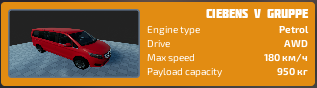
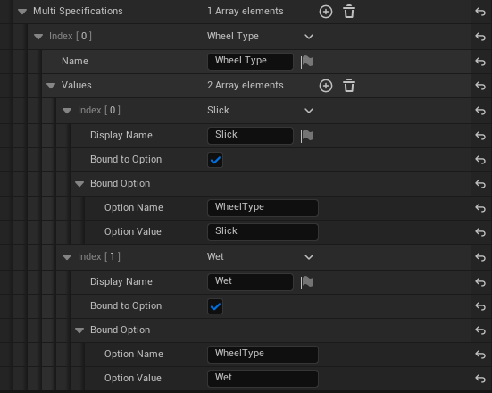

Navigation: README | 01. Minimal Car | 02. Exterior, Lights & World | 03. Interior, Dashboard & Cameras | 04. Mirrors & Wipers | 05. Sounds & FMOD | 06. Specs, Logic & Reference
This final module covers advanced vehicle card customization, switchable physics options, custom Blueprint logic, deep physics documentation links, and the all-in-one cheat sheet for every ControlBlock, MI_Mod_* parent material, and exact code identifier.
DA_<ModName> (PDA_PrototypedVehicleSpecification)You already set up the mandatory fields (Name, Image, Class, EngineTypes, TransmissionTypes) in Module 1. Under the Custom section, two more powerful lists are available:
CustomSpecifications)Displays cosmetic spec entries (drivetrain, top speed, payload capacity, horsepower, etc.) directly on the vehicle's garage card.
CustomSpecifications are displayed on the card.Name (label) and a Value.

MultiSpecifications)Works just like TransmissionTypes, allowing players to switch your custom physics options right from the in-game vehicle setup menu — for example, tire types (summer/winter/sport), multiple engines, suspension trims, or tuning packages!
How to wire MultiSpecifications to physics:
DA_<ModName> → MultiSpecifications, add a new specification (e.g., Name = "Tire Type"), populate its Values array (e.g., Summer, Sport), enable Bound to Option on each value, and fill in Option Name and Option Value.options.xml, declare an option with matching names (set SetSchema="false", since only one option — usually TransmissionType — may have SetSchema="true"):<Option Name="TireType" SetSchema="false">
<OptionValue Value="Summer" />
<OptionValue Value="Sport" />
</Option>Vehicle.ini, add override sections formatted as [ComponentName.OptionName.OptionValue]:[WheelFrontLeft.TireType.Sport]
FrictionCoeff = 1.15MultiSpecifications bound to options automatically appear in the vehicle's in-game customization menu!

VehicleLib)Standard XML schemas and lookup tables live in the base project at:
Content/Common/Vehicles/MotorCars/Schemes/ (AwdAuto.xml, AwdManual.xml, FwdAuto.xml, FwdManual.xml, RwdAuto.xml, RwdManual.xml)Content/Common/Vehicles/MotorCars/Tables/ (SpringProgression.csv, EngineVibration.csv, WheelForceLat.csv, WheelForceLon.csv, etc.)Rule for editing schemas and curve tables:
Never edit files inside Content/Common/Vehicles/MotorCars/ — changes there will NOT be packed into your .pak!
To customize any schema or curve table, copy it into your mod folder Plugins/Mods/Content/<ModName>/ and point to it using ../Plugins/Mods/Content/<ModName>/<File> in Vehicle.ini / options.xml.
For the full engineering reference covering all 46 physics component classes, tuning formulas, and I/O channels, see VehicleLib_MD:
Engine.csv, gearbox formulas, and 5 verification testsEngineDiesel + Turbocharger) and .csv formats*Intensity channels, inputs, and statesCarElectricsIf you are familiar with Unreal Engine Blueprints and want to add custom behavior (active aero, extra animations, special effects, etc.):
Do NOT write custom logic directly in the Vehicle Actor's (V_<ModName>) Event Graph!
Instead, create a dedicated ActorComponent (RMB in Content Browser → Blueprint Class → Actor Component), implement your logic inside it, and attach that component to your Vehicle Actor.
Make sure your custom component has NO ControlBlock (Control Asset Data) — it will then run normally without interference from the vehicle loader.
The following identifiers are hardcoded in the engine exactly as shown — copy them character for character:
ControlBlock: Wippers (double p)SuspentionSound_FR, SuspentionSound_FL (spelled with t)SpeedometrArrow (no e after t)MI_Mod_Emissive_Ikons (with k), MI_Mod_Stiches (no t)Vehicle.ini: Back (SuspensionBackLeft/Right, WheelBackLeft/Right), NOT Rear!ControlBlock Reference TableControlBlock Name |
Attached To | Properties (name, type, values) | Module |
|---|---|---|---|
Camera |
SceneComponent / CameraComponent |
Type (String: ThirdPersonBack, ThirdPersonFront, FirstPerson, Windshield, TopDown); opt. ArmLength (Float) |
1, 3 |
Light |
BP_ExportSpotLight / SpotLightComponent |
PhysicsOutput (StringArray: LowBeamIntensity, HighBeamIntensity, StopLightIntensity, etc.) |
2 |
LogicBox |
BoxCollision |
(none) | 2 |
FuelTank |
SceneComponent (under zero-transform parent) |
(none) | 2 |
RainBlocker |
StaticMeshComponent (with MM_Wireframe) |
(none) | 2 |
SteeringWheel |
StaticMeshComponent (under InteriorObjects) |
(none) | 3 |
SpeedArrow |
StaticMeshComponent (needle at zero mark) |
MaxAngle (Float), MaxValue (Float) |
3 |
RPMArrow |
StaticMeshComponent (needle at zero mark) |
MaxAngle (Float), MaxValue (Float) |
3 |
FuelArrow |
StaticMeshComponent (needle at zero mark) |
MaxAngle (Float) |
3 |
CoolantTemperatureArrow |
StaticMeshComponent (needle at zero mark) |
MaxAngle (Float), MinValue (Float), MaxValue (Float) |
3 |
SalonLights |
SceneComponent (or copied DashboardController) |
Key = physics channel (*Intensity), value = StringArray of material slot names |
3 |
Seats |
StaticMeshComponent (with <Name>_Landing sockets) |
Names (StringArray, e.g., ["Seat0"]), opt. DriverIndex (Int, e.g., 0) |
3 |
CarToy |
SceneComponent (or SM_Cosmonaft_Anim) |
(none) | 3 |
Mirror |
StaticMeshComponent (with Camera socket & UV1) |
opt. FOV (Float, rec. 20–40) |
4 |
Wippers (double p!) |
SkeletalMeshComponent (Animation Asset) |
Side (String: Front or Rear) |
4 |
SoundEvent |
SceneComponent |
Type (String, req.); opt. MinimumAttenuationDistance / MaximumAttenuationDistance (Float); paired Bank (String) + EventName (String) |
5 |
ModMaterials)Project folder: Content/Common/MasterMaterials/VehicleMaterials/ModMaterials/
| Material | Purpose |
|---|---|
MI_Mod_CarPaint |
Painted body panels (supports Livery texture with alpha mask). |
MI_Mod_Exterior |
Plastic, chrome, unpainted trim, wheel rims, brake calipers. |
MI_Mod_Tyre |
Rubber wheel tires. |
MI_Mod_Glass |
Vehicle windows and headlight lenses (clear or tinted). |
MI_Mod_Emissive_Beam |
Exterior illuminated elements (headlights, turn signals, brake lights). |
MI_Mod_Wipers |
Windshield wiper arms and blades. |
MI_Mod_Vehicle_Interior |
Cabin upholstery, dashboard, seats, and interior panels. |
MI_Mod_PanelGlass |
Instrument cluster protective glass. |
MI_Mod_Stiches |
Alpha-masked interior trim (seat stitching, steering wheel wrap). |
MI_Mod_Mirror |
Center rear-view mirror housing / dome. |
MI_Mod_Emissive_Ikons |
Illuminated dashboard warning icons. |
MI_Mod_Emissive_Panel |
Illuminated gauge elements (needles, scales). |
MI_Mod_Emissive_Saloon |
Backlit cabin buttons and switches (window switches, etc.). |
MI_Mod_LicensePlate |
Not used in mods (leave the LicensePlates slot empty; the game assigns its dynamic plate material automatically). |
Plugins/Mods/Content/<ModName>/, using Latin characters only and no spaces.Virtual Texture Streaming enabled (VT badge), all MRA maps use Compression Settings = Masks (no sRGB), and LFM_VehicleLightSpot beam textures use Alpha.Master Materials are used — only Material Instances inheriting from MI_Mod_*.Scale = (1.0, 1.0, 1.0).BlockAllDynamic is set only on Body; every other mesh (wheels, calipers, interior, glass, mirrors, wipers) uses NoCollision and has Receives Decals disabled.Vehicle.ini and options.xml point to ../Plugins/Mods/Content/<ModName>/... or Common/..., with no spaces before semicolons ;.Camera socket, had Generate UVs by Vertex Positions executed, and were saved.Ctrl + Shift + S) and all Blueprints compiled cleanly (Compile with zero errors).build_mod_dlc.bat, \Saved\DLC\Windows\Mods.pak was renamed to <ModName>.pak, and tested locally in CityCarDriving2/Content/Paks/.RainBlocker & wipers), at a gas station (FuelTank), and across all camera views.